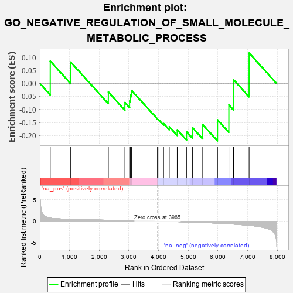
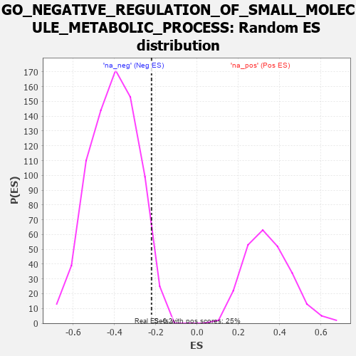

| | | Dataset | 7d |
| Phenotype | NoPhenotypeAvailable |
| Upregulated in class | na_neg |
| GeneSet | GO_NEGATIVE_REGULATION_OF_SMALL_MOLECULE_METABOLIC_PROCESS |
| Enrichment Score (ES) | -0.2206511 |
| Normalized Enrichment Score (NES) | -0.54429483 |
| Nominal p-value | 0.96419096 |
| FDR q-value | 1.0 |
| FWER p-Value | 1.0 |
Table: GSEA Results Summary

Fig 1: Enrichment plot: GO_NEGATIVE_REGULATION_OF_SMALL_MOLECULE_METABOLIC_PROCESS
Profile of the Running ES Score & Positions of GeneSet Members on the Rank Ordered List
| PROBE | GENE SYMBOL | GENE_TITLE | RANK IN GENE LIST | RANK METRIC SCORE | RUNNING ES | CORE ENRICHMENT | | 1 | GSK3A | | | 351 | 0.745 | 0.0851 | No |
| 2 | AKT1 | | | 1040 | 0.476 | 0.0812 | No |
| 3 | REST | | | 2308 | 0.259 | -0.0332 | No |
| 4 | WDTC1 | | | 2865 | 0.172 | -0.0733 | No |
| 5 | WNT4 | | | 3023 | 0.146 | -0.0677 | No |
| 6 | MAEA | | | 3048 | 0.143 | -0.0459 | No |
| 7 | TIGAR | | | 3091 | 0.138 | -0.0273 | No |
| 8 | NCOR1 | | | 3961 | 0.000 | -0.1364 | No |
| 9 | PARP1 | | | 4014 | -0.010 | -0.1412 | No |
| 10 | GFI1 | | | 4168 | -0.037 | -0.1541 | No |
| 11 | ACADL | | | 4360 | -0.069 | -0.1661 | No |
| 12 | CLK2 | | | 4628 | -0.124 | -0.1781 | No |
| 13 | EP300 | | | 4941 | -0.186 | -0.1850 | Yes |
| 14 | FLCN | | | 5140 | -0.235 | -0.1691 | Yes |
| 15 | ACTN3 | | | 5486 | -0.315 | -0.1579 | Yes |
| 16 | SCAP | | | 5986 | -0.466 | -0.1398 | Yes |
| 17 | ACMSD | | | 6367 | -0.603 | -0.0829 | Yes |
| 18 | PLIN5 | | | 6524 | -0.672 | 0.0141 | Yes |
| 19 | PIBF1 | | | 7049 | -0.966 | 0.1159 | Yes |
Table: GSEA details [plain text format]

Fig 2: GO_NEGATIVE_REGULATION_OF_SMALL_MOLECULE_METABOLIC_PROCESS: Random ES distribution
Gene set null distribution of ES for GO_NEGATIVE_REGULATION_OF_SMALL_MOLECULE_METABOLIC_PROCESS